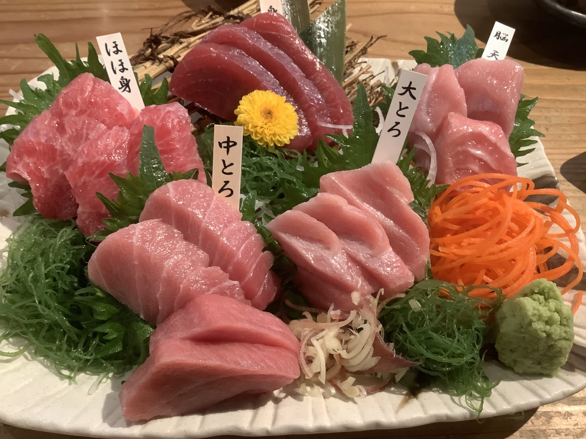
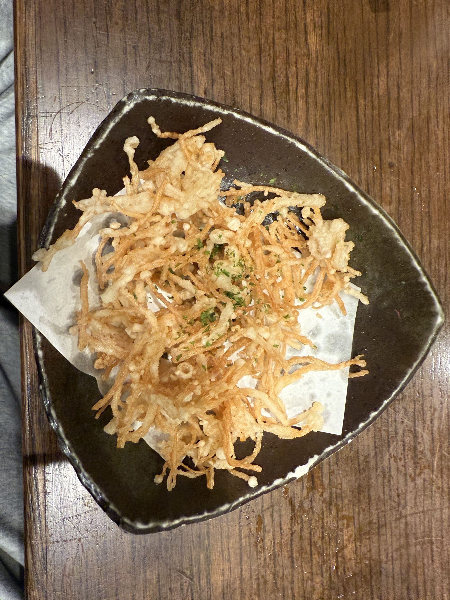
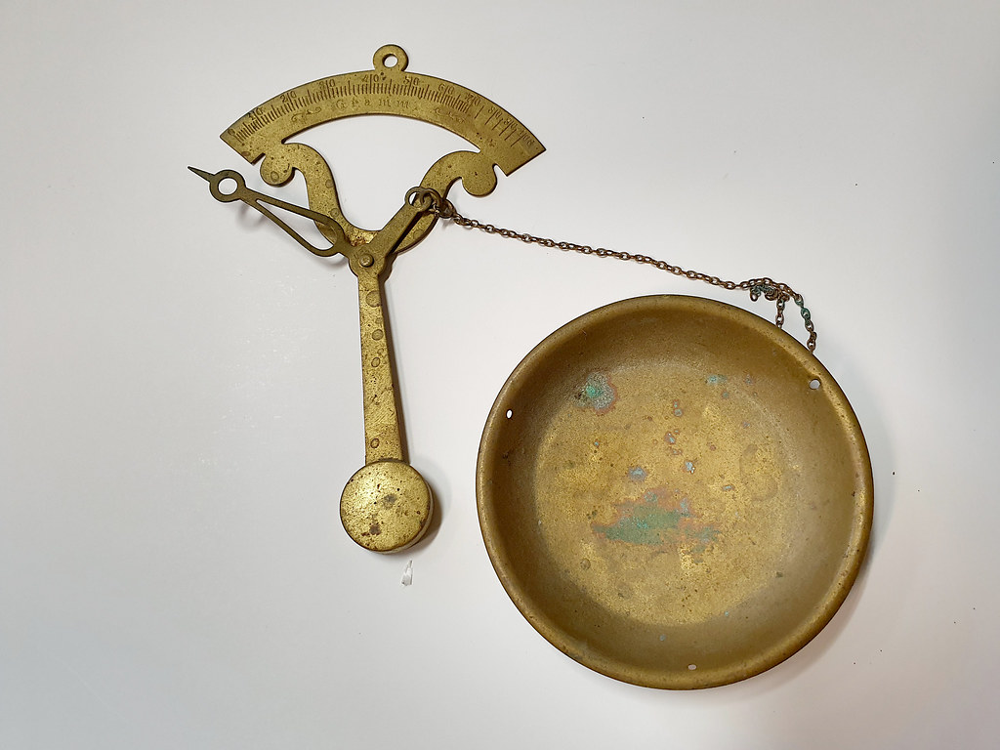

その場で仕立てる、選べる刺身盛り
ショーケースの中のトレーから、好きなネタを好きなだけ。組み合わせを考える時間も、この店で買い物をする楽しみのひとつです。
- ショーケースのトレーから、好きなネタを好きなだけ組み合わせられる対面販売
- 「イカが甘い」と評判の高い鮮度。スーパーではなかなか出会えない食感です
- サーモン・コハダ・マグロなど、その日仕入れたネタからご相談いただけます
- 量や中身のご相談も歓迎。おひとり様分の少量注文にも対応します
SAMPLE
鮮魚 中村
0297-62-0513Google口コミ ★4.5(58件)
茨城県龍ケ崎市根町 鮮魚 中村 ― 刺身も、おばあちゃんの手作り惣菜も、選べるから楽しい。

ショーケースの中のトレーから、好きなネタを好きなだけ。組み合わせを考える時間も、この店で買い物をする楽しみのひとつです。

見るからに手作りとわかる、あたたかみのある味。ご飯にもお酒にも合う、根町の食卓を支えてきた惣菜です。
ショーケースに並ぶ、その日のネタをまず覗いてみてください。仕入れによって並ぶ顔ぶれが変わるのも楽しみのひとつです。
気になったネタは、量や組み合わせを気軽にご相談ください。おひとり様の少量から、来客時のボリューム盛りまで対応します。
その場で盛り付けて、すぐ食卓へ。買ったその日に、いちばん良い状態で味わっていただけます。
1,000円台〜3,000円台まで、ご予算やお好みに応じてお選びいただけます。
おひとり様向けの少量から、来客時のボリューム盛りまで、幅広くご用意しています。
「このくらいの金額で」とお伝えいただければ、その範囲でお任せの盛り合わせも承ります。

その日の仕入れによる、旬のネタを対面でご案内します。
晩ごはんの一品に。切り身での購入も承っています。
日持ちする定番も揃えており、まとめ買いにも便利です。
通年でご用意。秤売りなので、少量からでもお求めいただけます。
天ぷら・煮物など、おばあちゃんの味を日替わりでご用意しています。
鯛・つぶ貝・中落ち・くじらの竜田揚げ など、季節や仕入れによって入れ替わる品もご相談ください。
日によって内容は変わります。今日の入荷が気になる方は、お気軽にお電話でお尋ねください。入荷状況は店頭でもご案内していますので、お立ち寄りの際にぜひお声がけください。
★★★★☆
「イカは最初コリコリとした食感で、スーパーでは味わえない鮮度と食感でした。サーモンもとろけるような柔らかさで、コハダも新鮮。清潔な店内で気持ちよく買い物ができました。」
★★★★☆
「刺し身の盛り合わせが美味しく、ショーケースの中のトレーから組み合わせていただけるので、注文するのが毎回楽しみです。イカ刺しが甘いという表現を、このお店で初めて実感できました。」
★★★★★
「このお店を知ってから、スーパーで魚を買わなくなりました。イチオシはおばあちゃんのお惣菜で、天ぷらセットはコストパフォーマンスも抜群です。」
★★★★★
「ネットで検索して見つけて来店しました。マグロがたっぷりで種類も豊富、ボリュームのある刺し盛りに満足しました。」
★★★★☆
「肉も好きですが、やっぱり刺し身は格別です。鯛・つぶ貝・中落ち・くじらの竜田揚げを購入して、どれも満足できました。」
Google口コミ ★4.5(58件)
Googleマップで口コミをもっと見る茨城県龍ケ崎市根町にお店を構えています。お電話でのご来店前のご相談・入荷状況のお問い合わせもお気軽にどうぞ。
※ 掲載中の一部の写真はフリー素材のイメージです。実際の店内・お料理写真は貴店ご提供のものに差し替えます。